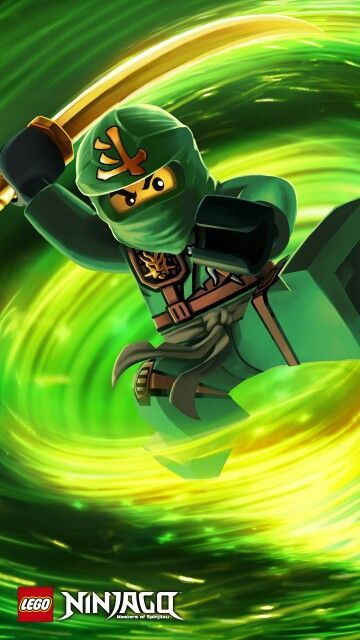

Abilities
- Shooting green energy from hands
- Moving mountains (if the plot allows)
- Fire, lightning, Earth, and Ice
- Spinjitzu
- Airjitzu (if the plot allows)
- Summoning a green/golden dragon
- Creation
Weaknesses
- Heartbreak
- Fear
True Potential
Lloyd is a unique case when it comes to achieving his true potential in that it doesn't mark the time when he is able to use his powers. Even when Lloyd was still a boy, he was able to conjur up green energy and use it defensively and offensively. Lloyd reaches his true potential during the final battle with the overlord in season 2. He becomes the gold-clad ultimate spinjitzu master and is able to use the powers of the first spinjitzu master. What held Lloyd back was fulfilling his destiny of defeating his overlord-possed father, Garmadon. Since becoming the green ninja, Lloyd knew he would have to fight Garmadon eventually. Lloyd perservered in the final battle, but his father was set free.